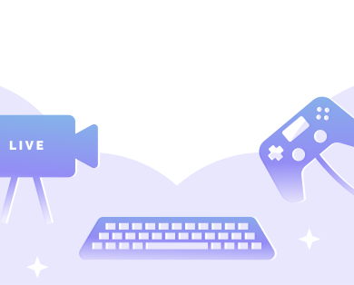

Thanks for joining
Elixir Stream Week!
We hope to be back soon with more events, so make sure to sign up for updates.
Missed it? No worries - grab your favorite drink and catch up on the recordings of five expert-led Elixir
broadcasts, or check out our
blogpost.
Elixir Stream Week!

700
People signed up for ESW updates
409
Highest viewers watching one stream
42
Countries that ESW was watched from
Tech QA
Learn more
Throwback to the first edition of Elixir Stream Week
We had an amazing time hearing from top Elixir developers. Let's take a look back:
José Valim
Dashbit - Creator of Elixir
What's new in Elixir 1.18
Mateusz Front
Software Mansion - Creator of Membrane
Boombox explained
Chris McCord
Fly.io - Creator of Phoenix
Live-coding real-time Twitch clone
Jonatan Kłosko
Dashbit - Creator of Livebook
Q&A about Livebook, Elixir Nx and Bumblebee

Filipe Cabaço
Software Engineer at Supabase
Real-time system using Elixir - Supabase stories
Technical QA
- Connection link was 10 Gbps
- 32 cores/64 threads CPU
- The machine was located in Finland
- 30% CPU usage for 409 viewers
- 700 Mbps for 409 viewers
- No custom Erlang VM tweaks